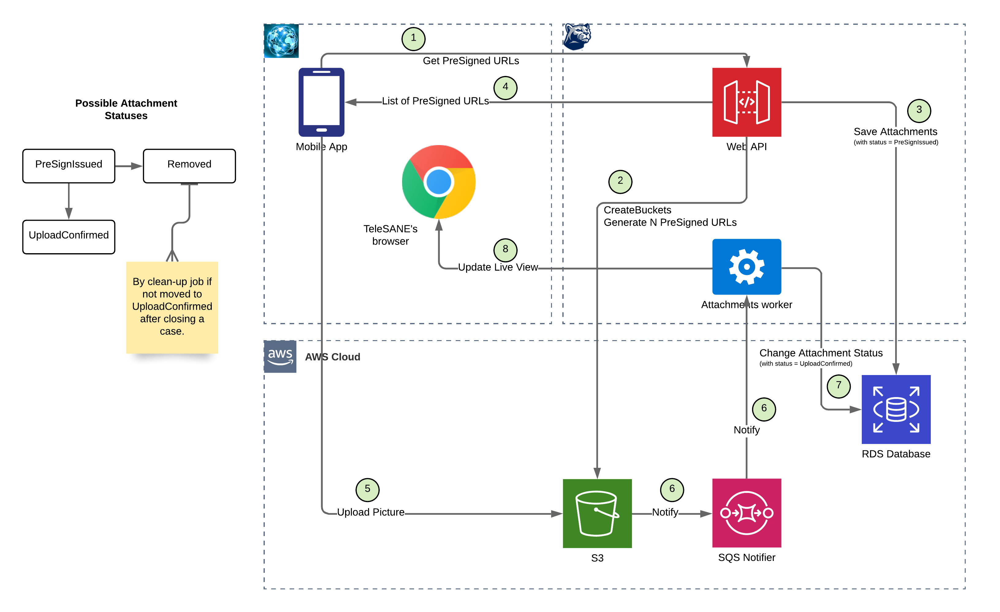

This is a short description of the project I’ve been working in a previous company. I’ll try to mention all technologically interesting aspects of it without revealing any intellectual property, which belongs to the customer.
Auto-start
Deployment script, among other things, exports a Profile of the application as a set of systemd services, so that operating system becomes responsible on (re-)starting everything.
namespace :foreman do
task :setup do
invoke :"foreman:export"
invoke :"foreman:enable"
end
desc "Export the Procfile"
task :export do
on roles :app do
within release_path do
execute :rbenv, "exec", "bundle", "exec", "foreman", "export", "systemd", fetch(:foreman_sites_dir),
["--app=#{fetch(:application)}", "--log=#{File.join(shared_path, 'log')}",
"--procfile=#{File.join(current_path, "Procfile.#{fetch(:rails_env)}")}"].join(" ")
end
execute :sudo, :systemctl, :"daemon-reload"
end
end
endZero-configuration
Application is also able to read all of the configuration values out of AWS SSM parameters. That is very convenient on AWS EC2 nodes, which can utilize IAM Instance Profiles feature (to access SSM without credentials) and achieve “zero configuration” mode for launching the system.
To separate environments (staging, production) from each other (in case of same region is used), each SSM variable has a /ENVIRONMENT/ prefix, which application trims off while reading configuration values. If application is unable to use SSM as configuration source, it falls back to environmental variables. Actually, application converts all SSM parameters to become environment variables on start, so that it is indistinguishable for the rest of the system where values come from.
if %w[staging production].include?(ENV["RAILS_ENV"])
require "aws/instmd"
require "aws-sdk-ssm"
Aws::SSM::Client.new(region: AWS::InstMD.meta_data.placement.region)
.get_parameters_by_path(path: "/#{ENV['RAILS_ENV']}", with_decryption: true).each do |list|
list.parameters.each do |parameter|
ENV[parameter.name.split("/").last] = parameter.value
end
end
else
require "dotenv"
Dotenv.load(".env.#{ENV.fetch('RAILS_ENV', 'development')}")
endUpload procedure
According to the requirements, application should be able to receive uploaded images, documents and videos (which can be quite large in size). To avoid all the burden of related to upload process: dealing with slow connections (which can drain total workers pool), rate limiting (to protect from DDoS attacks), multipart uploads, etc. – I decided to offload all the work to the AWS S3 service. It is possible to create a pre-signed upload url, which will be available to utilize during some time. So, main application’s backend prepares such upload urls and delivers it to either mobile application or a browser. So the whole upload process is happening between upload client (Mobile app or a Web browser) and AWS S3. After successful upload, AWS S3 will generate an event to the AWS SQS service, which backend system monitors.

The process in details:
- Mobile app requests from Web API list of pre-signed URLs to use for image (documents) upload. PreSigned URL allows Mobile app to one-time upload any content directly to S3 without “knowing” access credentials (which a mobile app shouldn’t know). PreSigned URL is a “promise”, a reserved space in S3 bucket, waiting for something to be uploaded there. PreSigned URLs are secure to use, auto-expire after usage or by timeout.
- Web API instructs S3 to create buckets if needed (first request for URLs in the Case). Web API also executes AWS API call to configure S3 to send notification to the SQS queue whenever new object appears in the bucket (if that wan’t done before).
- Web API saves an Attachments record to the database, marking it’s status as “generated”. Each Attachment record will already contain object_id of an S3 file object, as guid for itself.
- Web API returns list of generated PreSigned URLs for the Mobile app to utilize. Number of URLs is configurable in system’s config, 20 for now. Mobile app will request more if: a) list of non-utilized URLs drops below 5 b) upload to S3 fails with error (URL expiration), c) Mobile app “knows for sure”, that URL is already expired, judging by its expiration time field.
- Mobile app uploads picture or scanned document to S3.
- Attachments worker gets a message from SQS queue, which contains meta-information about upload (hash-sum, date-time, etc). It retrieves Attachment from database by object_id (it is unique GUID value).
- Attachments worker updates status of Attachment record from “generated” to “uploaded” to be accessible by images screen in Web Portal.
- Attachments worker also notifies the TeleSANE’s live pictures view with WebSockets connection to be displayed without page reload (that can also be done with long-polling from live view).
Storage backups
Application creates AWS S3 buckets on-demand. So it is important to specify all required bits and pieces upon creation. Code below takes care of:
- blocking all unwanted public access to the bucket
- setting up CORS headers to allow PUT uploads from everywhere (assuming that uploader have a pre-signed URL)
- configuring encryption of the data at rest
- enabling versioning for all of the data being uploaded (just in case)
- turning on replication configuration, so that each item it replicated to the AWS S3 Glassier storage for long-term backup
class CreateBucketInteraction < BaseInteraction
ON = "Enabled"
OFF = "Disabled"
BLOCK_CONFIGURATION = {
block_public_acls: true, ignore_public_acls: true, block_public_policy: true, restrict_public_buckets: true
}.freeze
CORS_CONFIGURATION = {
cors_rules: [{ allowed_methods: ["PUT"], allowed_origins: ["*"], allowed_headers: ["*"] }]
}.freeze
ENCRYPTION_CONFIGURATION = {
rules: [{ apply_server_side_encryption_by_default: { sse_algorithm: "AES256" } }]
}.freeze
VERSIONING_CONFIGURATION = {
status: ON
}.freeze
REPLICATION_CONFIGURATION = {
role: ENV.fetch("AWS_IAM_REPLICATION_ROLE_ARN"),
rules: [{
id: "replication",
priority: 0,
filter: { prefix: "" },
status: ON,
destination: {
bucket: ENV.fetch("AWS_S3_REPLICATION_BUCKET_ARN"),
storage_class: ENV.fetch("AWS_S3_REPLICATION_MODE"),
encryption_configuration: {
replica_kms_key_id: ENV.fetch("AWS_KMS_REPLICATION_KEY_ARN")
}
},
delete_marker_replication: { status: OFF },
source_selection_criteria: {
sse_kms_encrypted_objects: { status: ON },
replica_modifications: { status: ON }
}
}]
}.freeze
CALLS = {
public_access_block: { public_access_block_configuration: BLOCK_CONFIGURATION },
bucket_cors: { cors_configuration: CORS_CONFIGURATION },
bucket_encryption: { server_side_encryption_configuration: ENCRYPTION_CONFIGURATION },
bucket_versioning: { versioning_configuration: VERSIONING_CONFIGURATION },
bucket_replication: { replication_configuration: REPLICATION_CONFIGURATION }
}.freeze
object :bucket
def execute
client.create_bucket(bucket: bucket)
CALLS.each do |call, configuration|
client.method(:"put_#{call}").call(configuration.merge(bucket: bucket))
end
end
endDevelopment processes
Here is a screenshot of running a pre-commit hook on my latest RoR project.
{kind=link}
Screenshots of running RSpec tests and a test coverage report. I know only several examples of such coverage level (branch coverage, not just line coverage) in my company and all of them were written with me as a lead.
{kind=link}
{kind=link}
Screenshot of executing a rubocop (linter for ruby) and brakeman) (security vulnerability scanner) is integrated with a push hook as well as bundler-audit (tool to search CVEs in dependencies) – security is one of my passions ;)
{kind=link}
{kind=link}